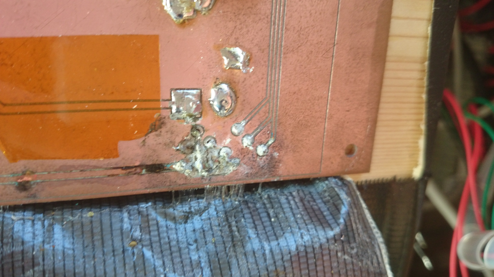

東舞鶴駅イルミネーションでの筐体型ゲーム機のリニューアル

舞鶴高専では、毎年3年生、4年生による、東舞鶴駅のイルミネーション設置を行っています。
以下動画ですが、担当した年の動画ではないです
私は舞鶴高専3年のときに、イルミネーションの一部として設置する筐体型ゲーム機のリニューアルを行いました。
この筐体型ゲーム機はモグラたたきのオマージュで、モグラの代わりに、光を追い、手を穴に突っ込むというものです
このとき、前年度に筐体や、大まかな設計はなされていたのですが、ゲームとしてプレイできる状況ではなかったため、回路、プログラムを新規設計しました。さいわい筐体などを変更する必要はなかったため、すべて一人で行いました。
ロボットを製作する部活動で経験した、回路やプログラムの製作技術を活用することができ、よいアウトプットの機会でした。
以下製作回路です
完成後、東舞鶴駅へ設置し、稼働させていたのですが、数か月後、動かなかったと報告があり、現地へ行くと、屋外への設置による回路へのカビが原因だと判明し、修正を行いました
製作に自信はあったのですが、部活動のときと環境が異なる事で、作業の難しさや、設備の違いなど、また違う経験が得られました
最後にプレイ動画です